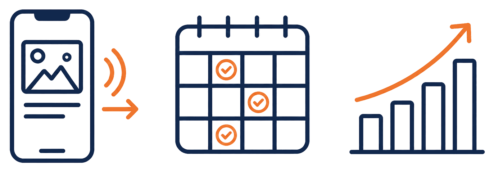
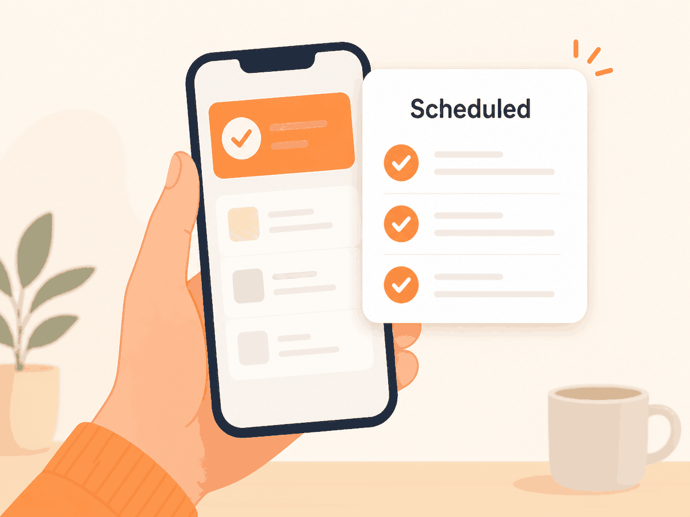

Content shaping
We cut long recordings into postable pieces and write the copy that goes around them.
Convert Social is intentionally simple. You send what you have, we handle the rest, and posts go out every week whether or not you had time to think about social media.

Podcast clips, videos, testimonials, or written posts. Drop them in whenever you have them, in whatever shape they are in.
Your calendar is built ahead of time, so nothing depends on you remembering to post on a busy Tuesday.
Each week goes live on the profiles you told us matter, in the formats that suit each platform.
Consistency never breaks. We source relevant content for your industry and keep the feed moving.
That is the order it happens in. Views first, audience second, inbound interest third.

We cut long recordings into postable pieces and write the copy that goes around them.
Every post is queued ahead of time across your active platforms.
A predictable weekly rhythm instead of bursts followed by silence.
Onboarding takes one conversation. Abbie asks which platforms you use, who you are trying to reach, and what topics you want to be known for. After that, the only thing you ever need to do is forward content when you have it.
Clients often want a particular photo or announcement out quickly. Send it over and it gets slotted into the schedule, ahead of whatever was queued if it is time sensitive.
Same day turnaround on urgent posts
Then you do nothing. We source simple, relevant content for your industry and your week still goes out on time.
Short answers on scheduling, content, platforms, and the monthly rate.
You send us content whenever you have it. We build the calendar, schedule everything one to two weeks in advance, and publish weekly posts to your profiles. You approve the direction once and then it runs.
No. Send us anything or nothing. When nothing comes in, we source simple, relevant content for your industry and post it, so your consistency never breaks.
We post to the profiles that matter for your business, including Facebook, Instagram, LinkedIn, and X. Tell us which accounts you want active and we handle the scheduling.
Podcast clips, YouTube reels, short video, client testimonials, and long-form written posts with imagery. If you have raw footage, we cut it down into postable pieces.
No long-term contract. Convert Social is $200 a month and you can stop any time it stops being useful.
That is the most common situation for our clients. Most people send a batch once in a while and let us carry the rest of the calendar, which is exactly what the service is built for.
One call sets up the schedule. From there your feed runs on its own.